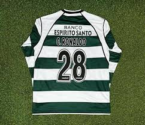
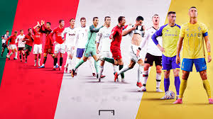

Cristiano Ronaldo nació el 5 de febrero de 1985 en Funchal, Madeira, Portugal. Creció en un vecindario humilde en la isla de Madeira, en una familia de clase baja. Fue el más joven de cuatro hermanos, y su familia no tenía muchos recursos. Su padre, José Dinis, trabajaba como jardinero y su madre, Dolores, era cocinera. A pesar de las dificultades económicas, la familia siempre apoyó a Ronaldo en su pasión por el fútbol.
Desde niño, mostró una habilidad excepcional para el fútbol. Jugaba a menudo en las calles de Madeira con sus amigos y vecinos, destacándose entre ellos. A los 8 años, ingresó al Andorinha, un club local, y luego se trasladó al Nacional de Madeira, donde siguió puliendo su talento.
A los 12 años, decidió mudarse a Lisboa para unirse a la academia del Sporting de Lisboa, un club importante en Portugal. Esto representó un gran sacrificio, ya que dejó a su familia y su isla natal para perseguir su sueño de ser futbolista profesional. Su madre, Dolores, fue fundamental en su decisión y siempre lo apoyó, aunque era difícil para ella estar lejos de su hijo tan joven.
En resumen, la infancia de Ronaldo estuvo marcada por la humildad, el sacrificio familiar y una gran pasión por el fútbol. Desde muy temprana edad, mostró un gran compromiso con su desarrollo como futbolista, lo que lo llevaría a alcanzar el éxito en el futuro.

Inicio de su Carrera
Cristiano Ronaldo comenzó su carrera futbolística a los 12 años, cuando dejó Madeira para unirse a la academia del Sporting de Lisboa. En 2002, debutó en el primer equipo y rápidamente se destacó como uno de los mejores jóvenes talentos de Portugal. Su gran talento llamó la atención de varios clubes europeos, y en 2003, con solo 18 años, fichó por el Manchester United por 12 millones de euros.
En el Manchester United, bajo la dirección de Sir Alex Ferguson, Ronaldo pasó de ser un jugador talentoso pero algo inconsistente a convertirse en una superestrella. Durante su tiempo en el club (2003-2009), ganó varios títulos, incluyendo la Premier League y la Liga de Campeones de la UEFA, y en 2008 ganó el Balón de Oro. En 2009, fue transferido al Real Madrid por 94 millones de euros, marcando el inicio de una nueva etapa en su carrera.
Logros
Cristiano Ronaldo ha logrado numerosos títulos y premios a lo largo de su carrera:
Clubes=
- Manchester United: 3 Premier League, 1 Liga de Campeones, 1 FA Cup, 1 Mundial de Clubes, y el Balón de Oro 2008.
- Real Madrid: 2 La Liga, 4 Ligas de Campeones, 2 Copas del Rey, 3 Mundiales de Clubes, y 5 Balones de Oro.
- Juventus: 2 Serie A, 1 Coppa Italia, y 2 Supercopas de Italia.
- Al Nassr: 1 Arabian Pro League.
Selección Nacional (Portugal)=
- urocopa 2016 y Liga de Naciones de la UEFA 2019.
- Máximo goleador histórico de Portugal y de la Eurocopa.
Premios Individuales=
- 5 Balones de Oro, 4 Botas de Oro, 2 FIFA The Best.
- Máximo goleador histórico de la Liga de Campeones y de la selección portuguesa.
Ronaldo es reconocido por su enorme éxito tanto a nivel de clubes como con su selección, sumando múltiples títulos y rompiendo numerosos récords.

Vida Personal
Cristiano Ronaldo nació en Madeira, Portugal, en una familia humilde. Es el hijo menor de Dolores y José Dinis, quien falleció en 2005. Ha mantenido una relación cercana con su familia, especialmente con su madre, quien siempre lo apoyó.
En cuanto a su vida amorosa, ha tenido varias relaciones públicas, siendo la más conocida la que mantuvo con la modelo Irina Shayk. Desde 2016, está con Georgina Rodríguez, con quien tiene una hija y mellizos. Además, tiene otros tres hijos de relaciones anteriores.
Ronaldo es conocido por su disciplina, ética de trabajo y su pasión por el fitness. Fuera del fútbol, ha lanzado su propia marca de ropa, CR7, y tiene una gran afición por los autos de lujo. También es muy generoso, donando grandes sumas de dinero a organizaciones benéficas y hospitales.
.jpg)